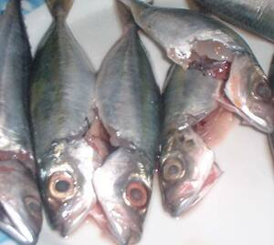

ngalap 
/ŋalap/
n.
“fish/animal/meat”
1.
n.
a generic name of all edible animals caught
Wrd.Gloss: fish; animal; meat
ngalap diyè te weyig
water game
Eng. wild animals
Tag. mga hayop na náhuhuli sa pamamaríl o pangangaso
OCM: Fishing (226)
Online dict status: -
Usage level: F
2.
n.
(mangngengalap, maN-rdpCV-) hunter
Iyan dengan mabantug ne me etew ka mangngengalap su mahaan sikandan egkeila te me etew pinaahi te keingesan dan.
The famous people long ago were the hunters for they are quickly known by their skills.
Eng. hunter
Tag. mámaril; mángangasó
OCM: Hunting and Trapping (224)
Online dict status: -
Usage level: M
3.
v.
for someone (egngangalap, agent, eg><ø-rdpCV-) to hunt
Eng. hunt
OCM: Hunting and Trapping (224)
Online dict status: -
Usage level: M
adj.
(ngalapen, -en) fishy
Amana kun dengan ne ngalapen ka Simud ne weyig su kenad e egkakita ka pantad.
The Simud river was very fishy before because the waterbed (usually sand) can't be seen.
Eng. fishy
Online dict status: -
Usage level: M
Updated by: RJH,JLM,TME,RJH,QDL,RJH
Last updated: 18/Jul/2016
"ngalap" in text "Cooking in Bamboo"
"ngalap" in text "Cooking in Bamboo"
"ngalap" in text "Making Lead Sinkers"
"ngalap" in text "Making Lead Sinkers"
"egngengalap" in text "Making Lead Sinkers"
"egngengalap" in text "Making Lead Sinkers"
"ngalap" in text "Making Lead Sinkers"
"ngalap" in text "Making Lead Sinkers"
"Ngalap" in text "Ngalap te weyig"
This page last updated: 03-Jan-2020
Copyright © 2009-2014, Matigsalug Language Christian Association, Inc